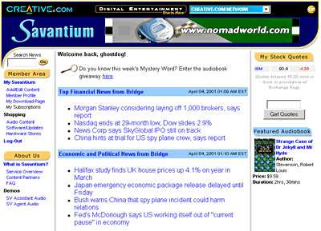
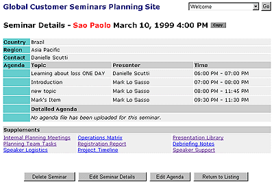

Subversion Edge
At CollabNet, I am a principal contributor to the open-source Subversion Edge management console. Written in Groovy / Grails, the product allows for complete Subversion administration in an easy-to-use web interface. Features include backup and restore, replication, and user management.
Responsibilities: Groovy Programming (Grails), Database Schema.

NFL Clubsites
In 2008, Razorfish developed the NFL Clubsites application, which allows each of the NFL's 32 teams to create and manage a team web site using a centralized platform. Sites can be built from a large palette of components, including CMS managed content, statistics, media galleries, and play-by-play. As one of the Java leads, I developed much of the back-end plumbing, including the service and DAO layers.
Responsibilities: Java Programming (Spring/Hibernate), Database Schema.

Current.com
At Current TV (2007 to 2008), I worked on a variety of projects to upgrade and enhance their online business, including: internationalization for UK and Italian sites; a video opinion "wall" for recording and viewing political commentary; and a complete Grails-based administrative console.
Responsibilities: Java Programming (Spring/Hibernate; Grails), Database Schema.

Gamut.net
In 2005, I architected and built a mobile content distribution platform for Gamut LLC. The multi-tiered system ran in a clustered J2EE environment and presented web and mobile views of the content. It was designed for easy reskinning as a private label offering.
Responsibilities: Java Programming (Struts / Apache ORM), Database Schema, System Architecture

ChevronTexaco FAMM
In Spring 2002, Red Sky Interactive worked with ChevronTexaco's Fuel and Marine Marketing division to develop a series of enhancemenents to their online order processing system, Ewave. I was responsible for requirements gathering and all programming to the EJB-based system.
Responsibilities: Java Programming

Miller Lite Virtual Racing League
The Miller Lite Virtual Racing League was developed by Red Sky Interactive to support Miller Lite's Nascar promotion in 2001-02. The Flash interface communicated through a middle-tier servlet layer to an EJB backend. In addition to desiging the Flash-tier framework, I was responsible for servlet programming as well as a some back-end components.
Responsibilities: Java Programming, Flash Programming

Creative Labs Savantium
As lead programmer on the Creative Labs - Savantium project at Roundpeg, I used Cold Fusion and Java connected to an Oracle database to create a customizable news and information portal. Content was aggregated for the web but was also rendered in an XML format for a third-party news reading application.
Responsibilities: Programming, Database Schema, Consulting
Lucent Technologies
In Spring 1999, Access Technologies Group developed an interactive planning and collaboration tool for Lucent's Global Customer Seminars initiative. As lead programmer, I used Cold Fusion and ASP connected to an Access database to implement requirements for seminar scheduling, role-based security, and document management.
Responsibilities: Programming, Database Schema
